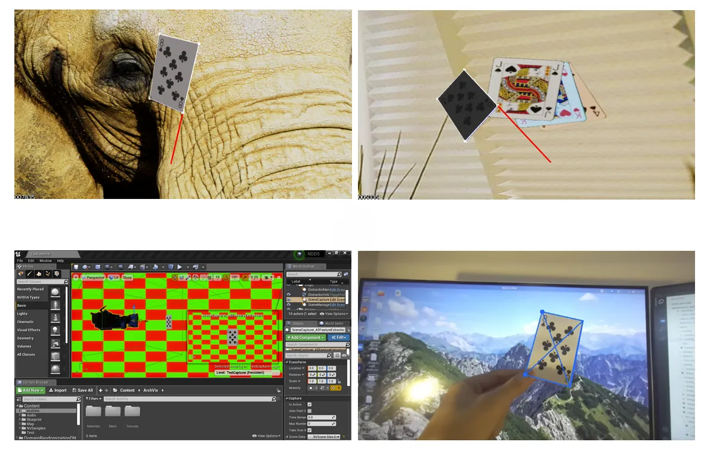
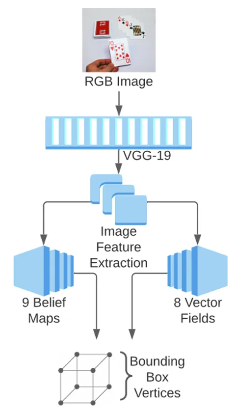
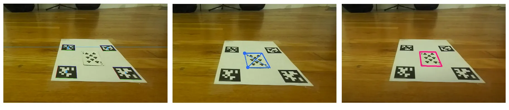
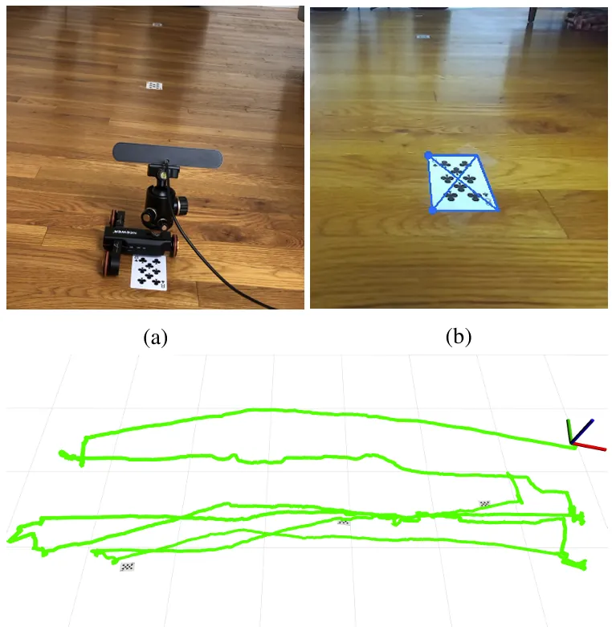

Playing Card Identification & Pose Estimation
MIT 6.869 (Advances in Computer Vision) | Class Project with Ziqi Lu | Spring 2021
Overview
We developed a deep-learning pipeline for identifying playing cards and estimating their 6-DOF pose using synthetic training data. The project explored how semantic object detection could be used as landmarks for object-level SLAM, comparing learned pose estimation against traditional feature-based methods.

Highlights
- Generated synthetic training data using NVIDIA NDDS and Unreal Engine
- Trained a DOPE-based neural network for playing card pose estimation
- Benchmarked performance against a SIFT + PnP feature-based pipeline
- Integrated the detector into an object-level SLAM system
- Demonstrated consistent card-level mapping using learned object landmarks despite noisy odometry.
Python • ROS • OpenCV • PyTorch • NVIDIA DOPE • NDDS • Unreal Engine • GTSAM • Object-Level SLAM



Why it Mattered
This project was my first exposure to learned object pose estimation and semantic SLAM, ideas that later influenced my master's thesis on active object-based navigation and continue to inform my work on robotics and spacecraft autonomy.